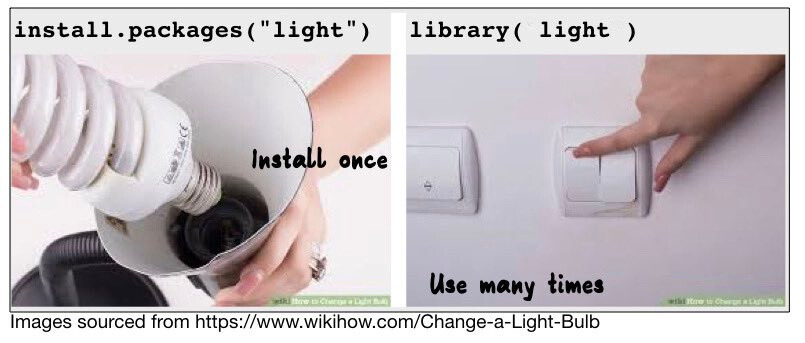

3+7+10 # Addition[1] 204-5 # Substraction[1] -13*9*10 # Multiplication[1] 2702/6 # Division[1] 0.33333332^2 # Exponentiation[1] 4(2+2)-(4*4)/2^2 # Mix of operations[1] 0First of all, R is a fancy calculator that can be used to perform fundamental arithmeric operations.
3+7+10 # Addition[1] 204-5 # Substraction[1] -13*9*10 # Multiplication[1] 2702/6 # Division[1] 0.33333332^2 # Exponentiation[1] 4(2+2)-(4*4)/2^2 # Mix of operations[1] 0When you run code in R, the results are shown in the console. However, you cannot directly reuse these results in further operations, which is what we want to do. To address this, we use objects. Objects in R act as containers that store values, allowing you to keep information for later use. To create an object in R, you use the assignment operator <- .
my_object <- 2
my_object[1] 2Let’s consider an example from the most recent French general election. The results led to a highly fragmented parliament, with 11 different parliamentary groups and no single party or coalition able to form an absolute majority on its own. This situation raises the question of which coalitions could be formed to achieve a majority and pass legislation. The code below uses objects to store the number of seats obtained by each parliamentary group.
# Left-wing groups
communists_seats <- 17
lfi_seats <- 72
greens_seats <- 38
socialists_seats <- 66
# Macron's party and allies
renaissance_seats <- 99 # This is Macron's party
modem_seats <- 36 # MODEM, a centrist party
horizon_seats <- 31 # Horizon, party of the former PM Édouard Philippe
# Right-wing groups
conservatives_seats <- 47 # "Les Républicains"
# Far-right groups
rn_seats <- 126 # National Rally (RN)
ciotti_seats <- 16 # Former conservatives who allied with Le Pen's party
# Others
liot_seats <- 22 # A mix of some independent centrists and regionalists
none_seats <- 7 # Non-affiliated MPsAfter executing these lines, you should be able to see the objects created and their values in the environment pane located in the upper-right section of RStudio. Once these objects created, it is possible to perform operations on them. For instance, it is possible to compute the total number of seats of actual existing coalitions by summing the number of seats of the different parties that compose them and saving them in new objects. Below, I create a new object left_seats that stores the total number of seats obtained by the left-wing parties by summing the different objects that store the number of seats obtained by the left-wing parties.
left_seats <- communists_seats + lfi_seats + greens_seats + socialists_seats
left_seats[1] 193Create two new objects macron_seats and far_right_seats that store the total number of seats obtained by Macron’s allies and far-right parties respectively.
Solution:
macron_seats <- renaissance_seats + modem_seats + horizon_seats
far_right_seats <- rn_seats + ciotti_seatsThe objects we used so far contained only one numeric value. However, what we mostly manipulate in R are vectors, which are sequences of different values on which we can perform operations. Vectors can be of different types (eg : numeric, character, logical, date) but they have to be of the same type. For instance, a numeric vector is a sequence of different numbers and a character vector is a sequence of different strings. Vectors are also unidimensionals which mean they contains only one sequence of values and not several such as matrices do.
We can generate vectors with c() which stands for “concatenate”. For instance, here, I create a vector containing the values of the seats obtained by different coalitions in the election. As a result, the vector coalition_seats contains the number of seats obtained by the left, Macron’s party and allies, the far-right and the conservatives.
coalition_seats <- c(left_seats, macron_seats, far_right_seats, conservatives_seats)
coalition_seats[1] 193 166 142 47We use vectors to store different values because it is possible to perform the same operation on all the values of a vector at once. Let’s say we want to know the number of seats that an existing coalition would need to have an absolute majority in the parliament. We can do this by creating a new object, majority, that stores the number of seats needed for an absolute majority, and then subtracting the number of seats obtained by the different coalitions from this value. The result will be a vector showing the number of seats each coalition needs to reach an absolute majority, which we could also store in a new object if desired.
majority <- 577/2 + 0.5 # Half of the number of seats (577) + 0.5 to round up (there is no half MP)
majority [1] 289majority - coalition_seats[1] 96 123 147 242So far, we have only used numerical vectors, which consist of numbers. However, we can also create character vectors, which are made up of strings enclosed in quotes (either single ' or double "). For example, we can create a vector containing the names of different parliamentary leaders.
As for other vectors, you can combine them in a single vector which will return a vector with all the leaders’ names.
leaders <- c(left_leaders, far_right_leaders)
leaders[1] "Chassaigne" "Chatelain" "Panot" "Vallaud" "Ciotti"
[6] "Le Pen" Create a vector that contains the names of the leaders of the Macron’s party : Attal, Fesneau, Marcangeli. Then, add this vector to the leaders vector and store the result in a new object all_leaders.
To manipulate vectors and conduct operations on them, we use functions. A function is a reusable block of code that performs a specific task, it takes several input values called arguments and produce an output. Let’s say you want to know how many seats parliamentary groups have on average in the French parliament. You could calculate the sum of the seats and dividing them by their number. But you could also just the mean() function that exists in R and that takes a vector of numbers as argument.
parl_seats <- c(communists_seats, greens_seats, socialists_seats, lfi_seats, renaissance_seats, modem_seats, horizon_seats, conservatives_seats, ciotti_seats, rn_seats, none_seats, liot_seats)
mean(parl_seats) # Compute the mean of the vector parl_seats[1] 48.08333It is also easy to use functions to compute the maximum, minimum, and sum of a vector of numbers.
In R, a missing value is represented by the symbol NA, which stands for “Not Available.” Missing values can arise for a variety of reasons, such as data not being observed or recorded, errors in data collection, or intentional omissions. Understanding and handling missing values is crucial because they can influence the results of your analysis or even cause some functions to return errors. For instance, imagine I haven’t found any information about the number of seats one parliamentary group get, but I want to retain this information in my vector. So, I add an NA to it.
parl_seats <- c(parl_seats, NA)
parl_seats [1] 17 38 66 72 99 36 31 47 16 126 7 22 NAWhen analyzing data, it’s not uncommon to encounter NA values, and it’s important to be aware of them. To check if a vector contains NA values, you can use the is.na() function. This function will returns what is called a logical vector that is a sequence of values where each element is either (TRUE) or not (FALSE). Logical vectors are often used to represent conditions or logical statements.
is.na(parl_seats) # Check which values of a vector are NAs [1] FALSE FALSE FALSE FALSE FALSE FALSE FALSE FALSE FALSE FALSE FALSE FALSE
[13] TRUEThis is important because certain functions will not operate properly if there are NA values in your data. For instance, the mean() function will return NA if the data contains any NA values
mean(parl_seats)[1] NATo deal with NA, the mean() function has a na.rm
mean(parl_seats, na.rm = TRUE) # Remove NA before computing the mean[1] 48.08333The functions we’ve discussed so far, such as sum() and mean(), come from base R. These are pre-loaded functions available immediately upon starting R. However, many functions you’ll encounter aren’t part of base R but instead belong to specific packages that individuals or groups have developed. You can think of packages as collections of functions crafted to simplify certain tasks or to introduce new capabilities to R. For example, there’s the tidyverse package, which I asked you to install before the class
To install a package in R, you can use the install.packages() function, passing the name of the package in quotation marks (either single or double). I recommend doing this installation in the console since you don’t need to save this step; it’s a one-time action. However, every time you start your script or Quarto document, you’ll need to load the package. To do this, use the library() function, providing the package name as an argument, but without the quotation marks.

When processing data, we primarily interact with vectors through the manipulation of dataframes in R. Dataframes are two-dimensional structures that contain rows and columns. Each column is a vector, and each row is an observation. Dataframes are the primary data structure used for data manipulation, computation, and visualization in R. In this class, we’ll work with a specific type of dataframe that comes from the tidyverse package called a tibble. Tibbles are a modern and enhanced version of dataframes that make them easier to print and manipulate.
To understand what dataframes look like, let us continue with the results of the french elections. I manually create a tibble with the tibble() function with different variables about parliamentary groups
left_coalition <- tibble(
party = c("Communists", "Greens", "LFI", "Socialists"),
leader = c("Chassaigne", "Chatelain", "Panot", "Vallaud"),
seats_2024 = c(17, 38, 72, 66),
seats_2022 = c(22, 21, 75, 31)
)
left_coalition# A tibble: 4 × 4
party leader seats_2024 seats_2022
<chr> <chr> <dbl> <dbl>
1 Communists Chassaigne 17 22
2 Greens Chatelain 38 21
3 LFI Panot 72 75
4 Socialists Vallaud 66 31You see now that we have a new object in our Environment Pane with 4 observations and 4 variables.
Different functions are available to get an idea of the informations and shape of the dataframe, which are useful when we load an unknown dataset and we want to understand its structure, what are the observations and variables.
glimpse(left_coalition) # Get a glimpse of your dataRows: 4
Columns: 4
$ party <chr> "Communists", "Greens", "LFI", "Socialists"
$ leader <chr> "Chassaigne", "Chatelain", "Panot", "Vallaud"
$ seats_2024 <dbl> 17, 38, 72, 66
$ seats_2022 <dbl> 22, 21, 75, 31colnames(left_coalition) # Retrieve column names of the dataframe[1] "party" "leader" "seats_2024" "seats_2022"summary(left_coalition) # Return a summary of the variables party leader seats_2024 seats_2022
Length:4 Length:4 Min. :17.00 Min. :21.00
Class :character Class :character 1st Qu.:32.75 1st Qu.:21.75
Mode :character Mode :character Median :52.00 Median :26.50
Mean :48.25 Mean :37.25
3rd Qu.:67.50 3rd Qu.:42.00
Max. :72.00 Max. :75.00 If we want to access only one variable (one vector) of that dataframe, we use the $ sign. This will return a vector of the values of this variable.
left_coalition$party # Select the party variable[1] "Communists" "Greens" "LFI" "Socialists"You can also create new variables based on the existing ones. Here I create a new variable called seats_changeby calculating the difference of seats between 2024 and 2022 for each party.
left_coalition$seats_change <- left_coalition$seats_2024 - left_coalition$seats_2022Create a new variable called seats_share that calculates the share of seats in 2024 for each party. The share of seats is calculated as the number of seats of the party divided by the total number of seats in the parliament multiplied by 100.
Solution:
left_coalition$seats_share <- left_coalition$seats_2024/577*100
left_coalition# A tibble: 4 × 6
party leader seats_2024 seats_2022 seats_change seats_share
<chr> <chr> <dbl> <dbl> <dbl> <dbl>
1 Communists Chassaigne 17 22 -5 2.95
2 Greens Chatelain 38 21 17 6.59
3 LFI Panot 72 75 -3 12.5
4 Socialists Vallaud 66 31 35 11.4 Up until now, we have been creating data manually for demonstration purposes. As we move forward, we will focus on analyzing real data. Every data analysis project starts with acquiring data. You can generate your own data through surveys, web scraping, or manual data coding (primary data sources). However, there are also many pre-existing datasets available for use (secondary data sources). These datasets are often provided by researchers, governments, NGOs, companies, international organizations, and more. I highly recommend checking out this list of political datasets curated by Erik Gahner Larsen. Throughout this course, we will use some of these established datasets in political science.
To analyze data in R, we first need to import it. While this might sound simple, it can be challenging for beginners. To read a file in R, we need to know two important things: the file format and the path.
Data comes in various file formats, which are standardized ways of storing and organizing data in digital files. These formats dictate how information is encoded and structured, allowing different software programs to understand and interpret the data correctly. The most common format for data is .csv (comma-separated values). In political science, you will also encounter Stata (.dta) and SPSS (.sav) files. R uses different functions to read files depending on their format.
Secondly, R needs to know where the data is located on your system. A “path” shows the position of a file or folder within your file system, detailing the series of directories and subdirectories leading to the file. There are two types of paths:
The absolute path gives the complete location of a file or directory, beginning at the root of the file system. Examples include: /home/user/documents/myfile.txt for Unix-like systems, and C:\Users\user\Documents\myfile.txt for Windows.
A relative path indicates the location of a file or directory in relation to the current working directory. For instance, data/mydata.csv points to a file named mydata.csv in the data subdirectory of the present directory.
The working directory refers to the directory where R is currently operating. If you access files in R without providing an absolute path, it defaults to searching within this working directory.
You can see your current working directory in R using the getwd() function. To set a new working directory, use the setwd() function, specifying the desired path as its argument.
getwd()[1] "/private/tmp/claude-501/-Users-malo-Documents-website/5de5d9b2-1fbe-469c-bea8-873d078c1ed2/scratchpad/intro_r_work/session01"Please note that using absolute paths in your code is considered a bad practice because it can make your code less usable for others. Instead, I recommend using R projects. An R project is a dedicated workspace for your R work, where you keep all your files, data, scripts, and output documents together. When you open an R project, it sets everything up so that your files are easy to find and your work is easier to share and reproduce.
From the top left corner of RStudio, click on File and then select New Project. You’ll then be given three options: to create a project in an existing directory, to create one in a new directory, or to check out a project from a version control repository like Git.
If you choose an existing directory, navigate to that directory. If you opt for a new directory, you’ll need to name your project and decide its save location on your computer. Once you finalize your choice by clicking Create Project, the working directory in RStudio will automatically be set to your project location. This means that any scripts, data files, or outputs you work on will be saved here by default, making them easier to find and reference later.
Inside your project directory, you’ll notice a file with an .Rproj extension, such as MyProject.Rproj. In the future, you can open this file to launch RStudio directly into this project, ensuring the working directory is already set. It’s also advisable to set up specific folders within your project directory for different components like scripts, data, and figures. This keeps everything tidy and organized as your project expands.
There are different functions to import data into R.
For CSV (Comma Separated Values) files, the base R function read.csv() is commonly used. However, within the tidyverse package suite, the readr package provides the read_csv() function, which tends to be faster and more versatile. The read_csv2() function is designed for CSV files using semicolons ; as field separators and commas , as decimal points, compared to read_csv()which assumes commas as field separators.
Excel files can be read using the readxl package, which provides the read_excel() function. This function can read both .xls and .xlsx files.
For SPSS data files, you can use the haven package. This package contains the function read_sav() for .sav files.
Stata data files, or .dta files, can also be read using the haven package with the read_dta() function.
All these functions enable you to read a file by specifying its path. Here, for example, I import a CSV file containing data on candidates for the 2024 legislative elections in France.
library(tidyverse)
french_candidates <- read_csv("data/2024_french_candidates.csv")
glimpse(french_candidates)Rows: 4,009
Columns: 9
$ code_department <chr> "01", "01", "01", "01", "01", "01", "01", "01", "01", …
$ departement <chr> "Ain", "Ain", "Ain", "Ain", "Ain", "Ain", "Ain", "Ain"…
$ first_name <chr> "Christophe", "Xavier", "Sébastien", "Vincent", "Éric"…
$ name <chr> "MAÎTRE", "BRETON", "GUERAUD", "GUILLERMIN", "LAHY", "…
$ nuance <chr> "RN", "LR", "UG", "ENS", "EXG", "DSV", "DSV", "RN", "D…
$ exprimes_per <dbl> 39.37, 23.96, 23.45, 11.68, 0.69, 0.52, 0.33, 39.20, 2…
$ gender <chr> "M.", "M.", "M.", "M.", "M.", "M.", "M.", "M.", "M.", …
$ age <dbl> 55, 62, 51, 48, 58, 36, 42, 35, 44, 37, 49, 69, 59, 43…
$ profession <chr> "(22) - Commerçant et assimilé", "(33) - Cadre de la f…Typically, we might want to save data to our disk after adding information, merging different datasets, and so on. This is useful for later reuse or to share the data with someone else. To achieve this, simply replace ‘read’ with ‘write’ in all the functions I’ve introduced previously. You’ll also need to specify the name of the R object containing your data and the path where you wish to export the data.
write_csv(french_candidates, "data/french_candidates2.csv")Note that I have written the names of objects with underscores. There are different conventions to write object names in R that you can discover here. I personnaly use snake case which use lowercase letters and underscores to separate words.
Rather than importing packages with library(), it is also possible to use the :: operator such as :
dplyr::glimpse(french_candidates)Rows: 4,009
Columns: 9
$ code_department <chr> "01", "01", "01", "01", "01", "01", "01", "01", "01", …
$ departement <chr> "Ain", "Ain", "Ain", "Ain", "Ain", "Ain", "Ain", "Ain"…
$ first_name <chr> "Christophe", "Xavier", "Sébastien", "Vincent", "Éric"…
$ name <chr> "MAÎTRE", "BRETON", "GUERAUD", "GUILLERMIN", "LAHY", "…
$ nuance <chr> "RN", "LR", "UG", "ENS", "EXG", "DSV", "DSV", "RN", "D…
$ exprimes_per <dbl> 39.37, 23.96, 23.45, 11.68, 0.69, 0.52, 0.33, 39.20, 2…
$ gender <chr> "M.", "M.", "M.", "M.", "M.", "M.", "M.", "M.", "M.", …
$ age <dbl> 55, 62, 51, 48, 58, 36, 42, 35, 44, 37, 49, 69, 59, 43…
$ profession <chr> "(22) - Commerçant et assimilé", "(33) - Cadre de la f…It lets you reference a specific function from a package without loading the whole package. This is handy when two packages have functions with the same name, ensuring clarity in your code. It’s also useful for one-off function uses, avoiding the need to load an entire package. This approach can make code clearer and sometimes faster by reducing loaded dependencies
When we manipulate vectors, we often want to access specific elements of them, which we call indexing, which is performed by using square brackets []. You can index either by position or by name.
When I write leaders[3], I want the value of the third element of the leaders vector, this is indexing by position. But when I write leaders[leaders == "Le Pen"], I index by name because I want the elements that have Le Pen as value.
leaders[1] "Chassaigne" "Chatelain" "Panot" "Vallaud" "Ciotti"
[6] "Le Pen" leaders[4] # Get the third element of the vector[1] "Vallaud"leaders[-3] # Get everything but the third element of the vector[1] "Chassaigne" "Chatelain" "Vallaud" "Ciotti" "Le Pen" leaders[c(1,4)] # Get the first and the fifth elements of the vector[1] "Chassaigne" "Vallaud" leaders[1:3] # Get elements from the first to the third[1] "Chassaigne" "Chatelain" "Panot" leaders[leaders == "Le Pen"] # Which has Le Pen as value[1] "Le Pen"leaders[leaders != "Le Pen"] # Which has not Le Pen as value[1] "Chassaigne" "Chatelain" "Panot" "Vallaud" "Ciotti" [1] "Ciotti" "Le Pen"[1] "Chassaigne" "Chatelain" "Panot" "Vallaud" Another type of vector in R is the logical vector, which consists of Boolean values: TRUE or FALSE. Logical vectors are useful for evaluating conditions. They can be used to check for errors in data or to filter variables based on specific criteria.
c(TRUE, TRUE, TRUE, FALSE, FALSE, FALSE)[1] TRUE TRUE TRUE FALSE FALSE FALSEFor instance, we could check whether there are no mistakes and confirm that Le Pen is not a leader of the left coalition. This means verifying that no value in the left_leaders vector is equal to “Le Pen”.
left_leaders == "Le Pen"[1] FALSE FALSE FALSE FALSEfar_right_leaders == "Le Pen"[1] FALSE TRUEThe evaluation of conditions can also be used to compare numeric values. For instance, we can check whether the left coalition has more seats than the far-right coalition.
left_seats > far_right_seats[1] TRUEIn R, functions often expect inputs of specific types. If you pass a character vector containing numeric numbers as strings to a function that expects a numeric vector, it may not behave as expected. As shown below, the function returns a NA which means Not available/applicable. When R encounters something it doesn’t understand, it returns an error message with indications about the problem.
parl_seats_chr <- c("17", "38", "66", "72", "99", "36", "31", "47", "16", "126", "7", "22")
parl_seats_chr [1] "17" "38" "66" "72" "99" "36" "31" "47" "16" "126" "7" "22" mean(parl_seats_chr) # This returns NAWarning in mean.default(parl_seats_chr): argument is not numeric or logical:
returning NA[1] NASimilarly, computing the sum of the parl_seats_chr vector does not work: even though its values look like numbers, they are stored as text. Trying to calculate the sum of our leaders character vector composed of leaders’ names fails for the same reason.
sum(parl_seats_chr) # This is an errorError in sum(parl_seats_chr): invalid 'type' (character) of argumentsum(leaders) # This is an errorError in sum(leaders): invalid 'type' (character) of argumentIf you are not sure about the type of your vectors, you can check with the class() function that will give you the answer.
Sometimes, a vector has not the good type for the operation we want to perform. To check the type of a vector, you can use the family of is. functions such as is.numeric() and is.character() that return a boolean operator. In case the vector is not the right type for our purpose, wan can try to coerce them with the family of as. functions such as as.numeric() and as.character().
is.numeric(parl_seats_chr) # Check if numeric[1] FALSEparl_seats_num <- as.numeric(parl_seats_chr) # Coerce to numeric
is.numeric(parl_seats_num) # Check again if numeric[1] TRUEmean(parl_seats_num) # Compute the mean[1] 48.08333Functions that you will find in R have been created by someone. You can also create your own functions in R. You usually start doing it when you are more advanced so do not worry it you find it hard, it is just for you to know that it is possible. Here I just create a simplified other function to calculate a mean in R.
# Create a function to compute the mean of a vector
compute_mean <- function(x) {
# Compute the sum of the values in the vector and divide by the number of values (length)
mean <- sum(x)/length(x)
# Return the result
return(mean)
}
compute_mean(parl_seats)[1] NAThe tidyverse isn’t just a single package but rather a meta-package, meaning it bundles together several other packages, each with its own set of functions. For example, one of these bundled packages is stringr, which offers tools for manipulating character vectors. Since stringr is part of the tidyverse, if you’ve already loaded the tidyverse, there’s no need to load stringr separately. With it, you can perform tasks like converting strings in a vector to uppercase or lowercase.
leaders[1] "Chassaigne" "Chatelain" "Panot" "Vallaud" "Ciotti"
[6] "Le Pen" str_to_lower(leaders) # Change strings to lower class[1] "chassaigne" "chatelain" "panot" "vallaud" "ciotti"
[6] "le pen" str_to_upper(leaders) # Change strings to upper class[1] "CHASSAIGNE" "CHATELAIN" "PANOT" "VALLAUD" "CIOTTI"
[6] "LE PEN" str_detect(leaders, "C") # Detect if strings that contains a "C"[1] TRUE TRUE FALSE FALSE TRUE FALSEWe can also combine characters vectors together with str_c().
parties <- c("Communists", "Greens", "LFI", "Socialists", "Ciotti's party", "National Rally")
str_c(leaders, " is the parliamentary leader of ", parties)[1] "Chassaigne is the parliamentary leader of Communists"
[2] "Chatelain is the parliamentary leader of Greens"
[3] "Panot is the parliamentary leader of LFI"
[4] "Vallaud is the parliamentary leader of Socialists"
[5] "Ciotti is the parliamentary leader of Ciotti's party"
[6] "Le Pen is the parliamentary leader of National Rally"